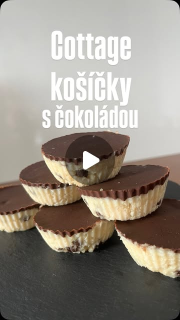

← všetky recepty
🧁 Vláčne košíčky z cottage s čokoládou
Instagram · @mlsna_zenska·pridané zo Signalu 16. 7. 2026
dezert/sladkébez lepkuvegetariánskebez pečenia

Nepečená proteínová sladkosť: základ z cottage a mandľovej múky, navrchu chrumkavá horká čokoláda. Skladujú sa v chladničke.
⏱️ Príprava: ~30 min + chladenie❄️ Bez pečenia: 📊 1 ks: cca 211 kcal / 9 g bielkovín
Suroviny
Postup
- Zmiešaj cottage, mandľovú múku, proteín, čakankový sirup, vanilkové aroma a kúsky čokolády na cesto.
- Cesto rozdeľ do košíčkov a uhlaď (postup je vo videu).
- Rozpusť čokoládu s kokosovým olejom a štipkou soli a košíčky ňou zalej.
- Nechaj stuhnúť v chladničke. Skladuj v chladničke.
💡 Pri uhládzaní cesta si namáčaj lyžičku vo vode, aby sa nelepilo (tip autorky).
▶️ Pozrieť video
Zdroj: Instagram reel — @mlsna_zenska (spracované z popisku, detailný postup vo videu; ilustračný obrázok)